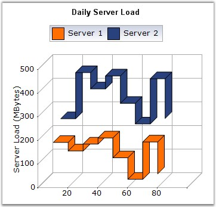

Step Line Charts use horizontal and vertical lines to connect data points resulting in a step like progression.

Figure 43: Chart displaying Step Line Series
Chart Details
|
Details | |
|
Number of Y values per point |
1 |
|
Number of Series |
One or More |
|
Cannot be Combined with |
Pie, Bar,Stacked Bar, Polar, Radar. |
Step Line series can be added to the chart using the following code.
|
[C#]
// Create chart series and add data points into it. ChartSeries series = this.ChartWebControl1.Model.NewSeries ("Series Name",ChartSeriesType.StepLine); series.Points.Add (0, 1); series.Points.Add (1, 3); series.Points.Add (2, 2); series.Points.Add (3, 2);
// Add the series to the chart series collection. this.ChartWebControl1.Series.Add (series); |
|
[VB.NET]
' Create chart series and add data points into it. Dim series As ChartSeries = Me.ChartWebControl1.Model.NewSeries ("Series Name", ChartSeriesType.StepLine) series.Points.Add (0, 1) series.Points.Add (1, 3) series.Points.Add (2, 2) series.Points.Add (3, 2)
' Add the series to the chart series collection. Me.ChartWebControl1.Series.Add (series) |